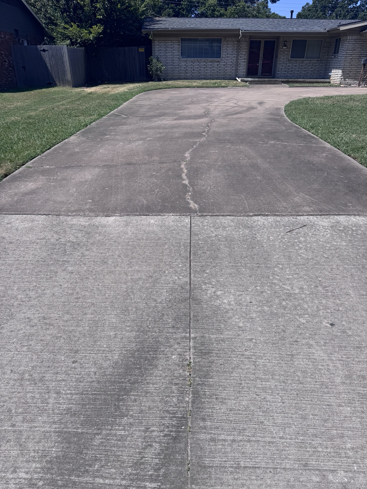
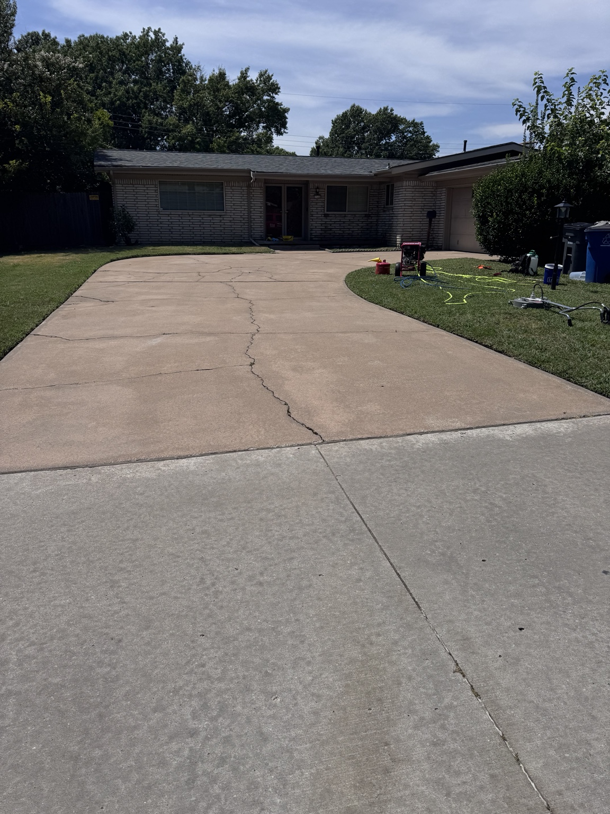

Concrete cleaning
A brighter, more even driveway and walkway finish
Pretreatment, a controlled surface-cleaner pass, edge work, and a final rinse helped lift embedded dirt and organic buildup without the uneven stripes left by an uncontrolled wand-only pass.

Before
After